A swimlane represents a participant in a business process. This may be an employee, a department, a customer, a supplier, or a role, for example, the initiator or approver. The tasks and events for which the process participant is responsible are located within the swimlane.
Thus, by adding all the swimlanes to the process and placing the corresponding tasks in them, you will graphically represent the interaction between the process participants and describe the sequence of actions that must be taken by each of them.
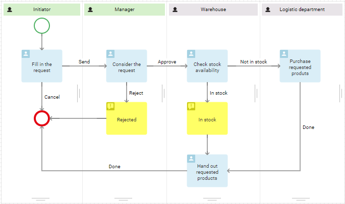
Types of swimlanes
To identify the participants in a business process, you can use one of the following types of swimlanes:
- Dynamic. This type is used if the job position of the participant is determined during the execution of the process. In the diagram, it is indicated in green.
- Static. Choose this type if the job position of the responsible user is known before the process begins. In the diagram, it is indicated in gray.
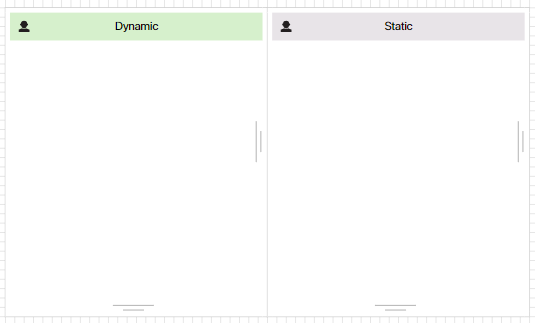
On the process diagram, swimlanes can be positioned both vertically and horizontally.
Add a swimlane
A swimlane representing the process Initiator is created automatically. Other swimlanes can be added in two ways:
- Click on the plus sign in the modeling field process.
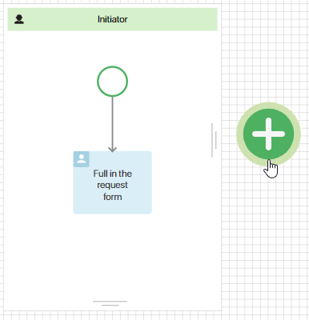
- Drag an item from the right panel to the modeling sheet.
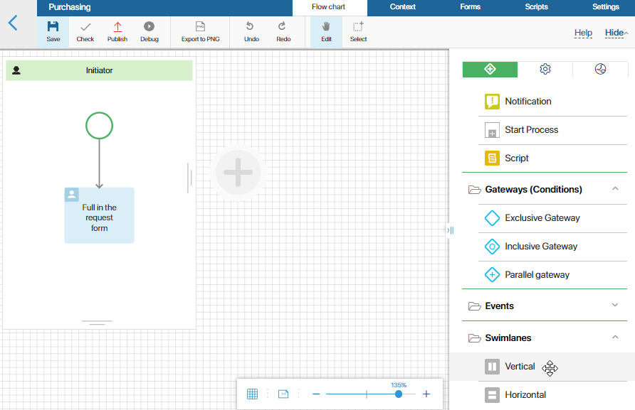
Swimlane settings
To make it easier for you to understand swimlane settings, let’s take the purchase request process as an example.
Below you can see all the process steps and process participants:
- Any employee can create a request and send it to their manager for approval.
- The manager rejects or approves the request.
- In case of a positive decision, the warehouse staff checks the availability of goods. If the requested product is in stock, it will be given to the initiator.
- If the product is not in stock, the warehouse employee will be assigned with the task to purchase the requested product.
- After the product is purchased, it will be given to the person who started the request process.
Let's describe the participants using dynamic and static swimlanes.
Dynamic swimlane
If any employee can start the process, then at the stage of process modeling their name or job position will be unknown. The system will determine the specific performer while the process is executed. In the diagram, the performer will be represented by a dynamic swimlane.
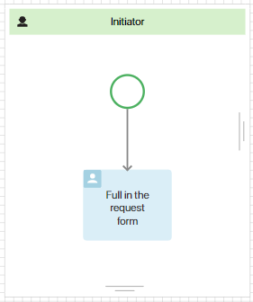
The Initiator swimlane is added automatically when you create a new process. To open the settings window, double-click on its name.
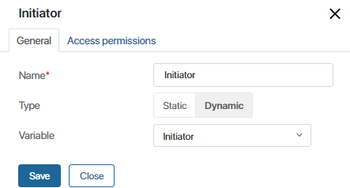
The Initiator variable is also created automatically. Its value is determined immediately after the process starts. This variable stores the information of the user who launched the process. You can use this variable when modeling task forms, notifications, etc.
Let's add another swimlane that will represent the manager of the initiator. In the opened window, select the Dynamic swimlane and save the settings. A swimlane named Executor will be added.
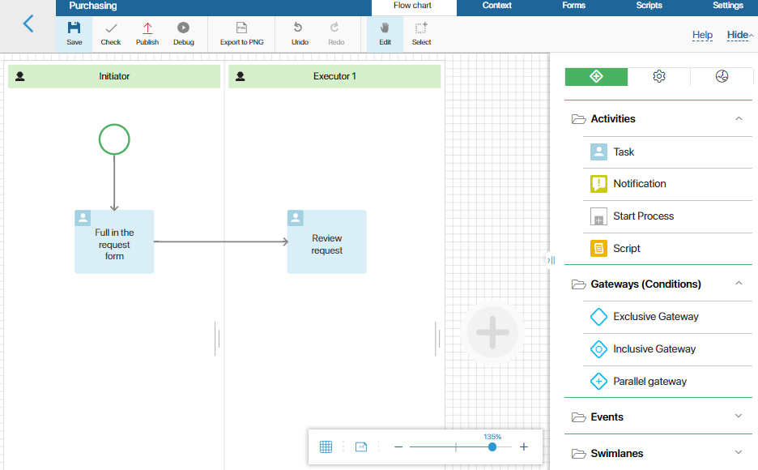
To increase the readability of the process diagram, rename the swimlane to Manager. To do this, go to the Settings window by double-clicking on the name of the swimlane.
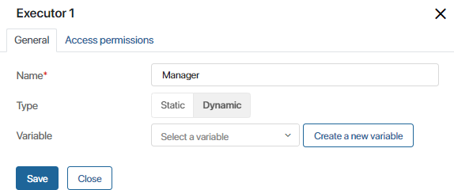
Now you need to specify a variable that stores the performer of the task. It is determined every time someone starts a process. For example, the initiator will select their manager from the list of all company employees when filling out the request.
Click the Create New Variable button and in the opened window specify the necessary parameters.
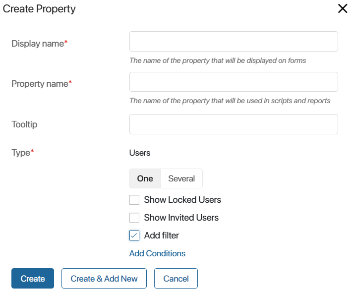
In this case, all required fields will be filled in automatically. Please note that you cannot change the type because in swimlanes you can only use the User type variables. However, you can specify additional parameters:
- One or Several. Use the switch to specify how many users can be written to the variable.
- Show Locked Users. Check the option if you want to specify locked users as the value of the variable.
- Show Invited Users. Check the option if the value of the variable can be set to users who have received an invitation to the company but have not yet been authorized in the system.
- Add filter. Check the option to limit the list of users available for selection. For example, you can allow selecting employees only from a certain group. To configure the conditions, click the Add Conditions link.
Select the options you would like to apply and click Create.
Once this is done, the settings window of the Manager swimlane will look like this:
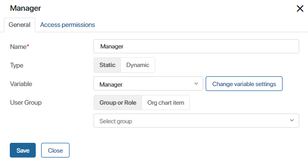
Thus, using dynamic swimlanes we represented two process participants. Now let's proceed to the static swimlane settings.
Static swimlane
Swimlanes of this type are used in cases when you know the position of the process participant or the group they belong to.
In the third step of the Purchase request process, the warehouse employee checks whether the equipment is in stock. Since we know who exactly will perform this task, we use a static swimlane to represent this process participant.
Let’s add a new swimlane and select Static swimlane. Go to the settings window to rename the swimlane.
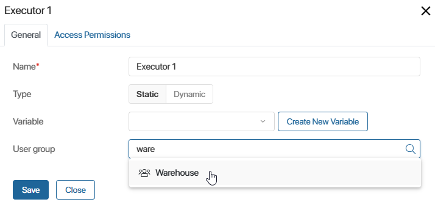
Let’s consider other options provided in the window:
- Variable. Here you can specify a Users type variable that will store information about the position and the name of the process participant. You can use this variable when modeling task forms, notifications, etc.
- User Group. Select a user group or an organizational chart item to define who exactly will perform the tasks placed in the swimlane. For example, you can select the Warehouse group. Users included in this group will be responsible for the tasks placed in this swimlane.
These options can be used in a static swimlane:
- If the user group is specified, the Variable field can be left blank.
- If you set a variable and it is filled in before the process enters the swimlane, the executor of the task will be the person specified in the variable. The user group is not taken into account.
- If you have specified both a variable and a user group, but the variable is not filled in beforehand, the value from the User Group field will be automatically written to the variable.
- If the variable is specified and it is empty, the task executor will not be defined and the tasks will be automatically passed to the supervisor.
Let’s consider an example. In the settings of the swimlane, the Manager variable is specified and the Warehouse group is selected in the User Group field.
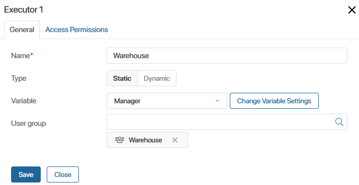
The manager is defined in the Review request task, located in the business process earlier than in the Warehouse swimlane. On the task form, the Manager field appears depending on the type of goods. The goods are issued by the person responsible for it, other goods—by any employee of the warehouse. Then:
- If the Manager field is not filled in the Consider the request task, the executor in the swimlane will be the Warehouse group.
- If the Manager field is filled in, the value specified in it will determine the executor in the swimlane. The Warehouse value specified in the User Group field will not be applied.
Group of users
By default, if you specify a group of users or a department in a swimlane, the First response option will be set for process tasks. A task will be assigned to all users included in the group or department. As soon as someone starts working on a task, it disappears from other users’ task lists.
If you place several tasks in the swimlane, then each new task will be automatically assigned to the employee who performed the previous one.
Additionally, for each task, you can select one of the Multiple Instance options: First Response, Parallel, or Sequential. Read more in the Task article.
In the process diagram, the swimlane representing the user group or department is indicated by the icon.
After setting up all the swimlanes, the purchase request process will look like this:
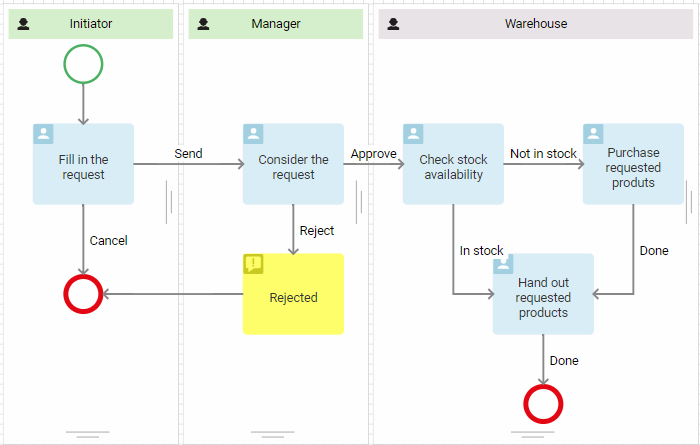
To learn about access permissions for app items and files used in tasks located in a certain swimlane, see Access permissions.
Found a typo? Select it and press Ctrl+Enter to send us feedback